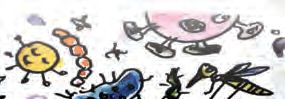
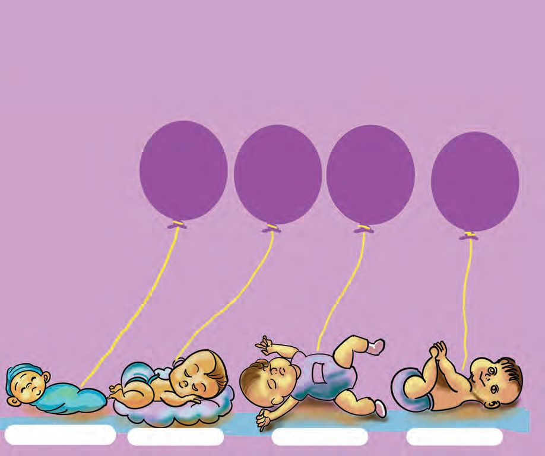

ാധികൾ
2 വ
പടരാതിരി ാൻ
പകർച്ച നിയാണ്.
വീട്ടിൽ േവെറ
ആർെക്കങ്കിലും േരാഗം
വന്നിരുേന്നാ?
എനിക്കും ഇവെൻ്റ
േചച്ചിക്കും
ഉണ്ടായിരുന്നു.
ചിത്രീകരണം 2.1
സംഭാഷണം ശ്രദ്ധിച്ചേലല്ാ.
ഈ കുട്ടിക്ക് പനി വന്നത് എങ്ങെനയായിരിക്കാം?
മ ു വർക്ക് ഈ േരാഗം പകരാതിരിക്കാൻ എന്തുെചയയ്ണം?
നിങ്ങൾക്കറിയാവുന്ന േരാഗങ്ങളുെട േപരുകൾ ശാ പു കത്തിൽ എഴുതൂ.
അവെയലല്ാം പകരുന്നവയാേണാ?
നിങ്ങൾ എഴുതിയ േരാഗങ്ങെള തരംതിരിച്ച് പട്ടികെ ടുത്തൂ.
പകരു
ഒരാളിൽനി ് മ ു വരിേല ു പകരു േരാഗ ളാണ്
പകർ വ ാധികൾ (communicable diseases).
മഹാമാരികൾ
പകർ വ ാധികൾ മ ു രാജ ളിേലേ ാ ഭൂഖ
ളിേലേ ാ
വ ാപി ുകയും നിരവധി ആളുകെള ബാധി ുകയും െച ാൽ
അതിെന മഹാമാരി (pandemic) എ ു പറയു ു. ന ൾ അതിജീവി
ചില മഹാമാരികളാണ് വസൂരി,
യം, േ ഗ്, േകാവിഡ് 19
തുട ിയവ.
േരാഗമു
ഒരാളുമായി ഇടപഴകുേ ാൾ നമുക്കും ആ േരാഗം വരാനു
സാധയ്തയിേലല്?
പകർച്ചവയ്ാധികൾക്ക് കാരണമാകുന്നത് എന്തായിരിക്കും?
അവെയ നമുക്ക് കാണാൻ സാധിക്കുേമാ?
േരാഗകാരികൾ (Pathogens)
കണ്ണുെകാണ്ട് േനരിട്ട് കാണാൻ സാധിക്കാത്ത സൂക്ഷ്മജീവികളായ ബാക്ടീരിയ,
ൈവറസ് , ഫംഗസ് തുടങ്ങിയവയാണ് മിക്ക പകർച്ചവയ്ാധികൾക്കും
കാരണമാകുന്നത്. േരാഗങ്ങൾക്ക് കാരണമാകുന്നതിനാൽ ഇവെയ േരാഗകാരികൾ
എന്നു പറയുന്നു.
ബാക്ടീരിയയുെട ൈമേക്രാേ ാ ് rശയ്ം
സൂ
്മജീവികൾെ
ാ ം
ചിത്രം 2.1
ൈവറസിെൻ്റ ൈമേക്രാേ ാ ് rശയ്ം
എലല്ാ സൂക്ഷ് മ ജീവികളും േരാഗകാരികളലല്. ന ുെട ശരീരത്തിൽ
െതാലി ുറത്തുെമലല് ഉപകാരികളായ ഒട്ടേനകം ബാക്ടീരിയകളുണ്ട്. ന ുെട
ആഹാരത്തിെൻ്റ ദഹനത്തിനും ആഗിരണത്തിനുെമലല് അവ സഹായിക്കുന്നുണ്ട്.
സൂക്ഷ്മജീവികൾ നമുക്ക് ഉപകാരികളാകുന്ന നിരവധി സന്ദർഭങ്ങളുണ്ട്.
േദാശമാവ് പുളി ിക്കുന്നത് ചിലയിനം ബാക്ടീരിയകളാണ്. ബാക്ടീരിയകളും
ഫംഗസുകളുെമാെക്കയാണ് ൈജവാവശി ങ്ങെള വിഘടി ിച്ച് മണ്ണിൽ
േചർക്കുന്നത്. സൂക്ഷ്മജീവികൾ ഉപകാരികളാകുന്ന കൂടുതൽ സന്ദർഭങ്ങൾ
കെണ്ടത്തി ശാ പു കത്തിൽ എഴുതൂ.
േരാഗാണുവാഹകർ
േരാഗകാരികളായ സൂ ്മജീവികെള ന ുെട ശരീര ിേല ്
എ ി ു
ജീവികളാണ് േരാഗാണുവാഹകർ (vectors). ഈ ,
എലിെ
്, െകാതുക്, വ ാൽ തുട ി ധാരാളം ജീവികൾ
േരാഗാണുവാഹകരിൽെ ടും.
േരാഗാണുവാഹകെര നിയന്ത്രിക്കാൻ നമുക്ക് എെന്തലല്ാം െചയയ്ാൻ സാധിക്കും?
കല്ാസിൽ ചർച്ചെച ് ശാ പു കത്തിൽ എഴുതൂ.
െകാതുകിെന നിയന്ത്രിക്കാം
െകാതുകിെന നിയന്ത്രിച്ചാൽ കുേറേയെറ േരാഗങ്ങൾ തടയാമേലല്ാ. െകാതുക്
വളരുന്ന സാഹചരയ്ം ന ുെട വീട്ടുപരിസരങ്ങളിൽ മാത്രം ഇലല്ാതാക്കിയാൽ
മതിേയാ?
അടി
േരാഗപ്രതിേരാധേശഷി
േരാഗാണുക്കൾ ശരീരത്തിൽ പ്രേവശിച്ചാൽ അവെയ നിയന്ത്രിക്കാനും
െചറുത്തുനിൽക്കാനുമു കഴിവ് സവ്ാഭാവികമായി ന ുെട ശരീരത്തിനുണ്ട്.
ഇതിന് സവ്ാഭാവിക േരാഗപ്രതിേരാധേശഷി (natural immunity) എന്നു പറയുന്നു.
ഈ കഴിവ് എലല്ാ വയ്ക്തികൾക്കും ഒരുേപാെലയാകണെമന്നിലല്.
േപാളിേയാ, െഹ ൈ ിസ്-ബി തുടങ്ങിയ ചില പകർച്ചവയ്ാധികൾെക്കതിെര
സവ്ാഭാവികമായ പ്രതിേരാധേശഷി ഉണ്ടാക്കാൻ ശരീരത്തിന് സാധിക്കാറിലല്.
ഇത്തരം േരാഗങ്ങൾ വരാതിരിക്കാൻ ന പ്രതിേരാധകുത്തിവ ുകൾ (vaccinations) എടുേക്കണ്ടതുണ്ട്. ഇതുവഴി േരാഗപ്രതിേരാധേശഷി ആർജിക്കാൻ
സാധിക്കും. ഇതിെന ആർജിത േരാഗപ്രതിേരാധേശഷി (acquired immunity)
എന്നു പറയുന്നു. മനുഷയ്െൻ്റ നിലനിൽ ിനുതെന്ന ഭീഷണിയായ വസൂരി,
േപല്ഗ്, േപാളിേയാ േപാലു പല മഹാമാരികെളയും ന ൾ അതിജീവിച്ചത്
പ്രതിേരാധകുത്തിവ ുകളിലൂെടയാണ്.
വാക്സിൻ
എടുക്കാനു വർ
കൗണ്ടർ രണ്ടിേലക്ക്
വരണം.
ചിത്രീകരണം 2.9
ഏെതലല് േരാഗങ്ങെള പ്രതിേരാധിക്കാനാണ് വാക്സിനുകൾ എടുേക്കണ്ടത്?
16 വയ ിനു ിൽ നിർബന്ധമായും എടുേക്കണ്ട വാക് സിനുകൾ
ഏെതാെക്കയാണ്?
കല്ാസിൽ ചർച്ചെചയയ്ൂ. കൂടുതൽ വിവരങ്ങൾ ആേരാഗയ്പ്രവർത്തകരുമായു
അഭിമുഖത്തിൽനിന്ന് േശഖരിക്കൂ. ആേരാഗയ്പ്രവർത്തകരുമായു
അഭിമുഖത്തിന് മുൻകൂട്ടി േചാദയ്ാവലി തയയ്ാറാേക്കേണ്ട? ഏെതലല് േചാദയ്ങ്ങൾ
ഉൾെ ടുത്തണം?
അടി
ാനശാ ം V
35
Page 36
Figure fig_ch01_p036_01 (Page 36)

Figure fig_ch01_p036_02 (Page 36)

Figure fig_ch01_p036_03 (Page 36)
വാക്സിേനഷൻ ചാർട്ട്
BCG ബാസിലസ് കാൽെമ ് - െഗവ്റിൻ
OPV ഓറൽ േപാളിേയാ വാക്സിൻ
Hep B െഹ ൈ ിസ് ബി
FIPV േപാളിേയാ വാക്സിൻ - ഫ്രാക്ഷണൽ േഡാസ്
RVV േറാട്ടാൈവറസ് വാക്സിൻ
േരാഗങ്ങൾ പകരുന്ന വിധവും പ്രതിേരാധിക്കാനു മാർഗങ്ങളും സംബന്ധിച്ച്
ആളുകൾക്ക് ശരിയായ അറിവ് നൽേകണ്ടതുണ്ട്. ഇക്കാരയ്ത്തിൽ നമുക്ക്
െചയയ്ാൻ കഴിയുന്ന പ്രവർത്തനങ്ങൾ ഏെതാെക്കയാണ്?
നാടകം
പാവനാടകം
കാർട്ടൂൺ
േപാ
ർ
ശരിയായ അറിവും തിേരാധമാർഗ ളും െകാ ് േരാഗ
അക ി നിർ
. ആേരാഗ മു ജനതയാണ് നാടിെ സ
അടി